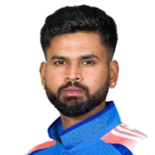

Executive Performance Summary: Championship-winning captain (2024) holding a 61.8% high-leverage win rate (+9.3% differential) across 17 crunch matches.
Quantitative Advantage: Iyer led KKR to the 2024 IPL title while demonstrating consistent middle-order control, earning 2 Player-of-the-Match awards in tight finishes.
Risk & Comparative Analysis: Balances boundary scoring against spin with experienced strike rotation against high pace.
Tactical Fit for RR IPL 2027: Provides senior middle-order anchoring to complement Rajasthan's dynamic young batting core at Jaipur.
• Strict Delivery Accounting: Evaluated across 200,961 regular tournament deliveries from 867 senior T20 fixtures (2022–2026). Super Over deliveries are isolated into dedicated registries to prevent acute small-sample distortion.
• Context-Conditioned Baseline: Non-linear Expected Runs model trained via 5-Fold GroupKFold cross-validation across match clusters, completely eliminating intra-match leakage.
• Empirical Bayes Shrinkage: Regressed toward population prior with strength M_0 = 150 legal deliveries, calibrating out small-sample noise via Spearman-Brown split-half reliability.
• Match-Clustered Bootstrap: 1,000-replicate match-clustered bootstrap resampling full match clusters with replacement to produce verified 90% rank intervals and Top-10 probabilities.